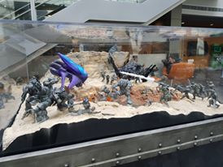

Trip to Microsoft Build - Day 1 Arrival
So a couple of months ago, I received an amazing message from Jim Bennett, author of Xamarin in Action and Senior Cloud Developer Advocate at Microsoft. The team is able to give tickets to the big annual Microsoft Developer conference called Build, this year held in Seattle, to people who contribute to the community and may not otherwise be able to make it; and I was the receiver of one of these tickets!
It was touch and go if I could go for a while as I had to self-fund the travel and expenses but as you can guess from the post title, I made it! This is post 1 in a series I will write covering my experiences and why this may be of interest to you including cool new announcements!
Once I arrived in Seattle, I was met at the airport by my friend and Microsoft MVP Mitch Muenster who was kind enough to arrange a tour of the Inclusive Tech Lab at Microsoft as well as a quick tour of some of the campus.
We started off at Boardwalk which is a restaurant in a shop/cafe/bar area for employees called the Commons. This is where I experienced my first Impossible Burger which is a grilled vegan burger that aims to simulate a beef burger including pretend blood. It didn't taste exactly like a hamburger and the texture was slightly different but it was absolutely delicious and I would happily have one again if the chance arises.
We were early for our appointment with his friend Tara Voelker, a Program Manager on Microsoft's Mixer team and show host. So we went for a quick look around the Visitor Center (American spellings for American buildings, sorry!) where I saw the different variation of computers they provide. I was also blown away to see a section dedicated to SeeingAI. This is an INCREDIBLE project you can see here that describes the world to those with visual impairments so they can easily navigate and interact with their surroundings like everybody else.
After that we sat in the sun (what's that sun thing again?) for a while and took it all in while chatting about stuff. I learnt about Floating Tanks which is heavily salted water in tanks you can hire for usually 60 minutes and are supposed to be very relaxing. I discovered I live within walking distance of one here in Manchester so I will book a session soon I think.
Tara then met us and gave us a tour of the Mixer area where they do all the work on the Mixer product (think of it as Microsoft's answer to Twitch). There was some really cool Halo figures in display cases in the foyer of Studio D building. They were from an exhibition a while ago apparently.

I also got to briefly meet a few people who actually create content for or create Mixer itself which was cool. We then headed to a building which contains Microsoft's Inclusive Tech Lab. They are working in conjunction with a UK company called Special Effects, implementing ideas based on their research and prototypes which helps make tech and gaming inclusive for all. Examples of things I saw include:
- A setup for controlling games like Rocket League which has pedals for accelerating, pads you can hit either side with your knee for left and right and a lever by your head you can push with your head to jump. This is to make gaming accesible to those who either don't have or can't use their hands as easily.
- A controller which is controlled using blowing action.
- A screen which completely takes away the sense of vision to help you learn how to create games that still include those with visual impairments.
- A setup of Dolby Atmos complete with two subwoofers. This can be used in conjunction with a game written with accurate sounds to help those with visual impairments rely on hearing to control the game. Tara was telling me she saw someone really good at FPS just by being able to sense what was going on with sound.
Obviously this is just a small sample but the whole space was really throught provoking and I was so glad I was able to see it. I have my own challenges in certain areas but I am completely physically able-bodied so like many, I never think enough about how gaming might present challenges for those who can't use a controller, keyboard/mouse or other device in the same way.
It was really great to see Microsoft putting so much time and effort into making sure their products, whether that is hardware or software, is accessible to all.
I went back to my hotel, checked-in and got settled after that as I had been up about 20 hours with a lot of travelling and it was starting to affect me but what a great start to my trip!